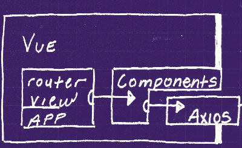
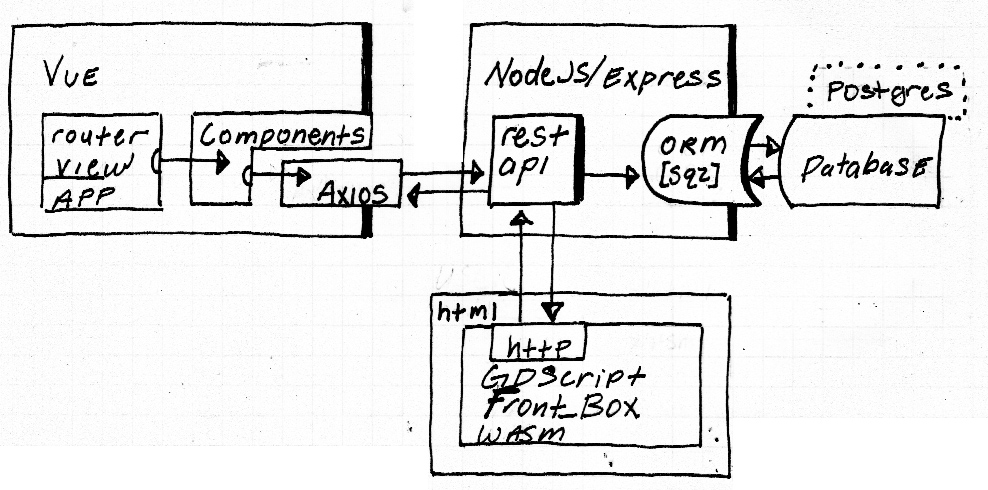

3/21| L.Blair | R.R.
3/21| L.Blair | R.R.
* This demo is not connected to PostgreSQL, for the full experience you can download the source-code from GITHUB
The admin CMS UI is built with Vue.js, Axios, HTML, CSS, and Javascript. It's a SPA style app, with a siingle router-view, and simple local css style-sheet.
Express creates Rest-APIs, Express and the Database (PostgreSQL) communicate using an ORM (Sequelize). Express creates API methods automatically, at the defined route-urls (route.js).
The 'Front-End' user experience was created with GDSCript, exported to a WASM file, and wrapped in HTML. The HTTPClient is used to download data, which is parsed to JSON and displayed using various Control Nodes.
Downloaing an Listing Bug Reports in GdScript:
var error = $HTTPRequest.request("api/url...")
if result == 0:
var json = JSON.parse(body.get_string_from_utf8())
var num = -1
for reports in json.result.size():
num += 1
var r = json.result[num]
var details = r.values()
var id = details[0]
var title = details[1]
...
create_li_box(id, title, assigned_to, issue, last_updated, created_at, resolution)
func create_li_box(id, title, assigned_to, issue, last_updated, created_at, resolution):
var box = li_box.instance()
list_box.add_child(box)
box.id.set_text(str(id))
box.title.set_text(title)
...